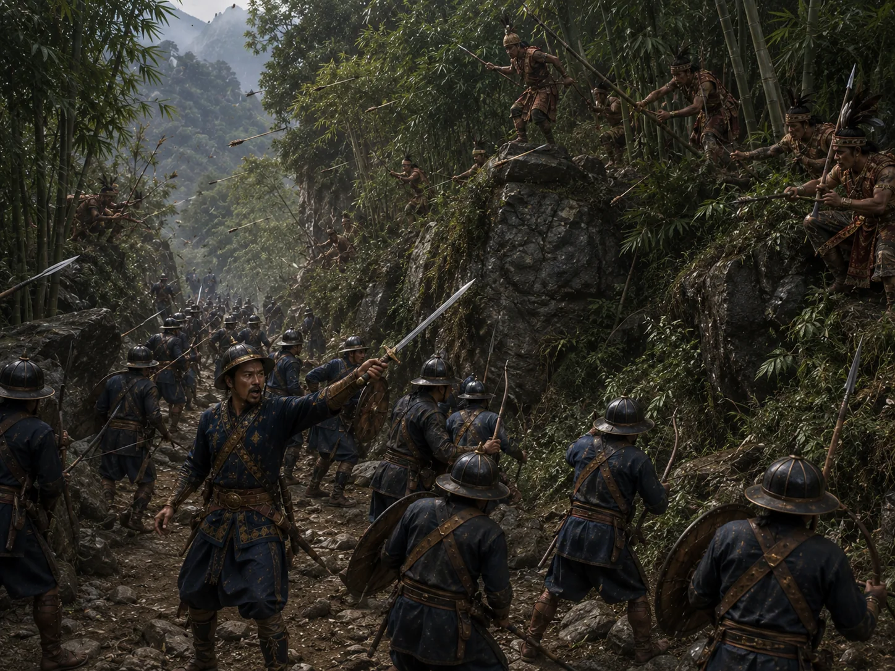

Tangshu Ambush of Borgohain Khenphung
1492 · The coming of Sukaphaa

During a patrol in the eastern hill tracts, Borgohain Khenphung is ambushed by hostile Tangshu warriors but manages a fighting retreat.
Sources have not yet been catalogued for this record.
People: Khenphung Borgohain, Suhenphaa
Open this scene in the interactive archive · Follow this event on MAP